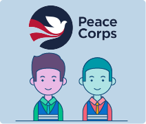

The Peace Corps was established by President John
F. Kennedy on March 1, 1961. It became a permanent
United States government agency under the State
Department in September of that same year. Its aim,
in the words of President Kennedy, was to “create
a pool of trained American men and women sent
overseas by the United States government to help
foreign countries meet their need of power.”
Volunteers for the Peace Corps must be United States citizens and at least 18 years
old. An accepted volunteer is assigned to a project requested by a foreign country. The
volunteer prepares for his task by studying for three months at a United States College
or University. During this time, the volunteers learn the language, history, politics, and
customs of the country which they are assigned.
When they go overseas, the volunteers work
directly with the inhabitants of the country. They
speak the native language, sharing their lives and
receiving a living allowance comparable to that
earned by the people among whom they are
working with. The normal term of service is two
years. In 1961 about 900 volunteers served in
sixteen different countries of Latin America, Asia,
and Africa.
The number of volunteers has risen steadily each year. Two years after its formation,
the Peace Corps won the Ramon Magsaysay Award. The award consists of a $10,000
dollar prize and is the Asian equivalent to the Nobel Peace Prize. A non-Asian group
had never before won this award.